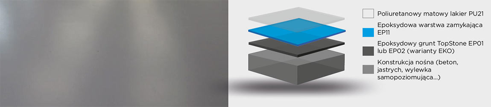
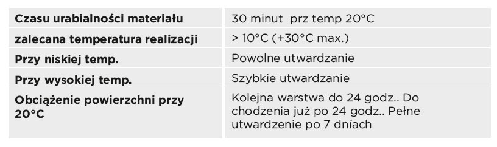
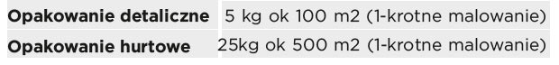

Poliuretanowy matowy lakier. 2-składnikowy wodorozcieńczalny poliuretan z możliwością barwienia wg RAL.
Ostateczna matująca warstwa wierzchnia z idealną przyczepnością do wybranych powierzchni TopStone
- zmatowienie epoksydowej wylewki TopStone Ep11
- zamykająca warstwa epoksydowej wylewki TopStone EP11 z zasypem kolorowych chipsów
- zmatowienie epoksydowego lakieru TopStone Ep21
- zmatowienie polyuretano-epoksydowej wylewkiTopStone Ep31
- jednolita matowa powierzchnia
- bardzo dobra przyczepność do wybranych mas TopStone
- niskie zużycie
- dobra chemiczna odporność
- ekonomiczna cena
- przeźroczysty lub barwiony wg RAL
- UV stabilny
-poliuretanowa dwuskładnikowa wodorozcieńczalna powłoka o niskiej lepkości, bez rozpuszczalników i bez nonylfenolu , przyjazna dla środowiska naturalnego

W czasie aplikacji i utwardzania TopStone PU21- zabroniony jest kontakt z wodą i innymi substancjami c h e m . P o d ł o ż e n i e m o ż e z a w i e r a ć wodorozpuszczalnych substancji takich jak sole, rozpuszcaalniki itp. Przy ogrzewaniu pomieszczeń w czasie aplikacji nie używać ogrzewaczy gazowych, naftowych, które produkują w miejscu realizacji CO i 2 parę wodną, które maja negatywny wpływ na jakość wykonywanej powierzchni.

1. Na utwardzoną epoksydową, polyuretanoepoksydową lub poliuretanową powierzchnię TopStone aplikowac TopStone Pu21 zgodnie z poniższą
technologią
2. Przygotowanie narzędzi: pojemnik do mieszania dwóch składników spoiwa wg instrukcji , mieszadło, wałek welurowy o krótkim włosiu
3. Dokładnie wymieszać oba składniki A i B TopStone Pu21 za pomocą mieszadła wolnoobrotowego przez okres 3 minut.
4. Tak przygotowany materiał zużyć do 30-tu minut przy temp. 20°C, malując welurowym wałkiem
5. TopStone PU21 aplikować przy wzrastającej temperaturze, obniżenie ryzyka kondensacji pary wodnej na powierzchni materiału.
Zastosowanie: pomieszczenia gdzie pożądana jest matowa warstwa wierzchnia.
TopStone PU21 zaraz po wymieszaniu aplikujemy. Jeśli tego nie dopełnimy, przy następnym mieszaniu np. 5-10 min. może nastąpić gwałtowna reakcja egzotermiczna (bardzo szybkie utwardzenie z wydzieleniem ciepła). Narzędzia oraz skórę w przypaku zabrudzenia nieutwardzoną masą czyścimy TopStone Cleanerem lub acetonem.